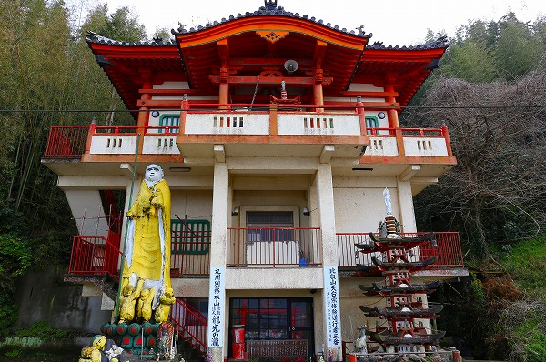

私の愛読書「九州の巨人！巨木！！と巨大仏！！！」という本の中で抜群に奇天烈な大仏が紹介されていたので見に行ってきたよ。
場所は北九州市の若松区。
八幡製鉄所をはじめとする巨大工場群に囲まれたエリアだ。
目の前は広大なソーラー発電所。
チョット大袈裟かもしれないが小倉の街がすっぽり収まる位の巨大なソーラーパネル群だ。
そんなソーラーパネルの海のような場所と対峙するように小さなお寺が建っていた。
3階建ての建物は最上階だけ仏堂っぽい建築だが、1、2階はシンプルな造形。
3階が本堂部分なのだろうか。
そして見逃せない（…というかそこにしか目が行かない）のが
黄色いお地蔵さんの御姿！

丁度、2階分の高さなので6〜7ｍといったところだろうか。
どうですか？この衝撃的なインパクト！
もう、造形がどうのとかプロポーションがどうのとか四の五の言いません。
こんなお地蔵さんがこの地球上にいる事自体に感謝したい気持ちで一杯です。マジで。
イエロー地蔵の脇には
龍光の瀧とある。
逆サイドには天台宗の行場であると書かれている。
この建物の裏に滝があるのだろうか？
あるいはここより百メートルほど東に灘ノ瀧不動尊という滝があったが、そこの事なのだろうか？

足元には子供たちがお地蔵さんの救いを求めてすがっている…のか？
もう見ているだけでうっとりですよ。
足元には小坊主が
ぐったりしちゃってます。
小さいお地蔵さんが並んでいる。
お地蔵さんの逆サイドには五重塔が。
これまた不思議な造形の塔である。
丸窓がチョット顔っぽくてキュートだ。
そして異様に広がった屋根には補助材なのだろうか鎖が張ってある。
塔の前には役行者と思わしき行者の像が。
龍も横たわっている。
龍の鱗の表現だけが妙に細かくて、そのマチエールが際立っていた。
建物には鍵がかかっており、中には入れない。
外から伺うと１階内部には鳥居があり、その先に恵比寿大国がおり、その奥に観音像があった。
観音像の足元にはこれまた救いを求める衆生っぽい人たちが。
そして左右の龍はガラモンみたいになっちゃってるぞ。
扉の前には「ドロボウさんカメラありもうやめない」（原文ママ）とある。
賽銭泥棒でもいたのだろうか。
もう一つ気になる文言が。
「極楽キップ売場所」（原文ママ）…も、もしかしてこの建物の中に極楽があるんですかい？
しかもキップ売場って…もしかしてもしかして有料施設ってことはそれなりの極楽ってことですかい？
もしかしてもしかしてもしかしてイエロー地蔵の作者さんが極楽を手掛けてたりしてるんですかい？
うわー、そう考えると是が非でも見てみたい〜！
…とはいうものの、１階は施錠されており、2階への階段はこんな感じ。
鉄扉で塞がれ、有刺鉄線がグルグルに巻かれており、
来るんじゃねえオーラが満々。
詳しい事をご存知の方はぜひご一報くださいませ。
改めて正面から見る。
３階から見たら目の前のソーラーパネル群を一望できるのだろうか。その先の海まで見えるのだろうか。
やっぱり登ってみたかったなー。
それより何より極楽の正体が知りたかったなー。
あ〜、３階にも塔が立っているのがチラっと見えるじゃないか！
何から何まで謎だらけの寺院であった。
参照；九州の巨人！巨木！と巨大仏！！！ オガワカオリ